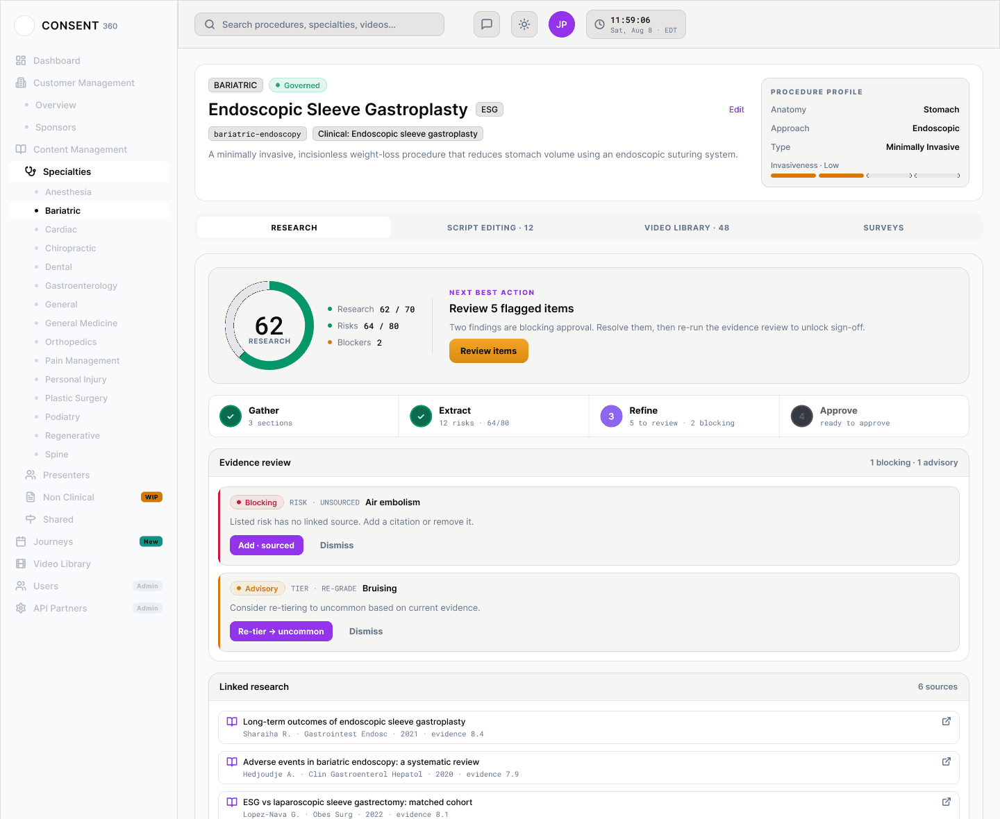
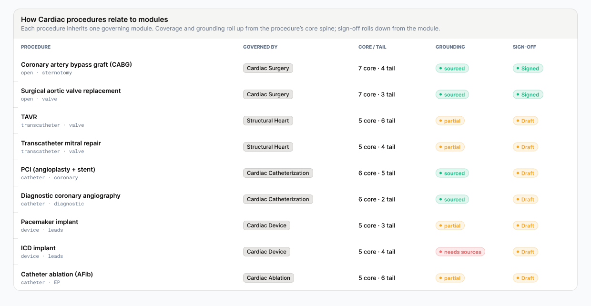
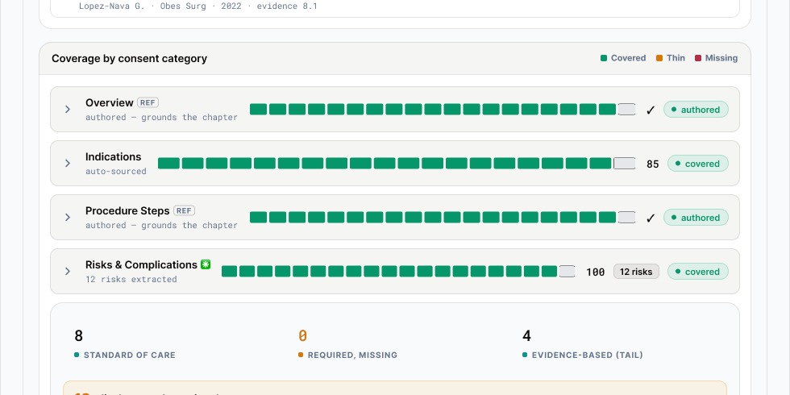
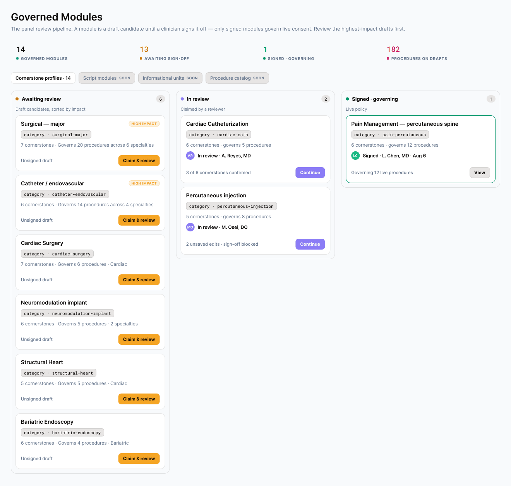
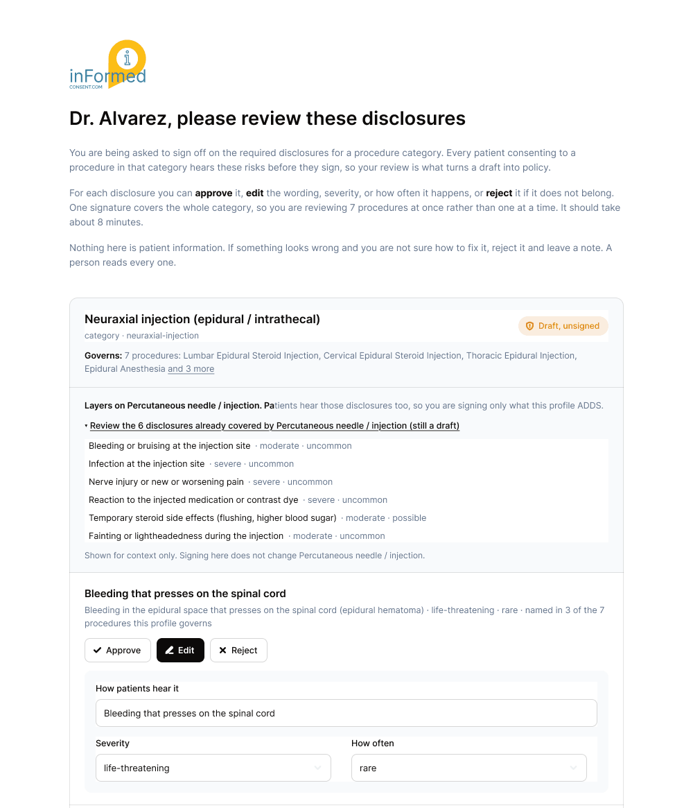
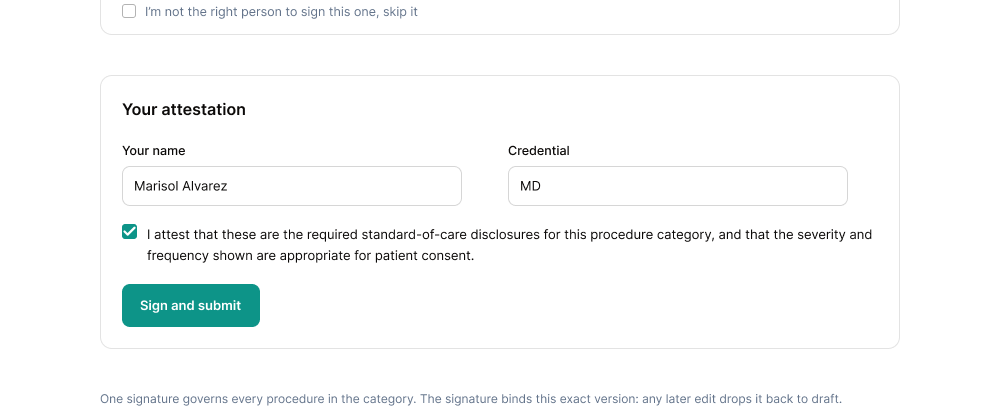
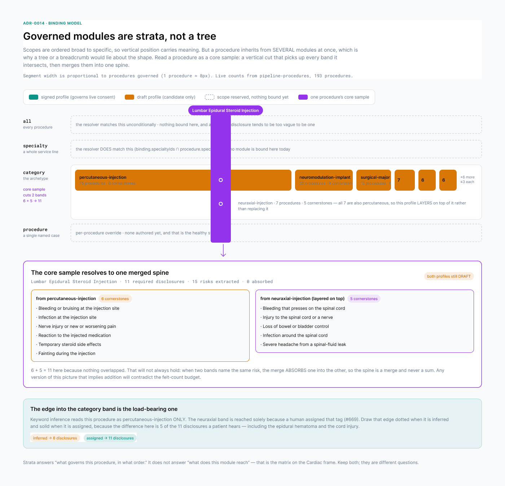
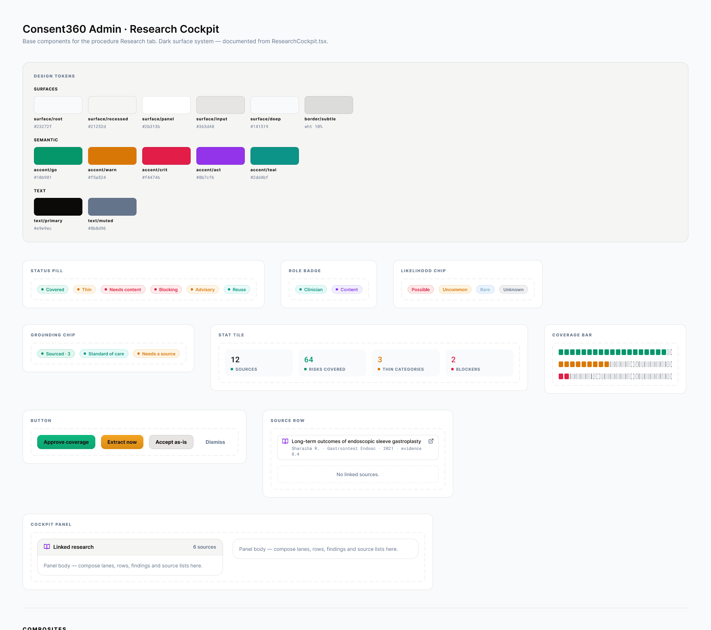

Teaching a system what a doctor has to disclose
A research agent reads the medical literature for a procedure. A clinician has to sign off on what a patient will actually hear. This is the thing in between. The hard part was never retrieval. It was deciding what a risk list even is.

The problem
The operator had become a janitor for a bad search
The flow was source-first. Search the literature for the procedure name, admit whatever came back, extract the risks and alternatives out of those sources, hand the pile to a person to clean up. The risk list was a byproduct of the search.
We audited the linked sources. Forty-four percent were off target. Not wrong exactly. Just about a different anatomy, a different approach, a different question entirely. A broad query for a spine injection comes back with telerehab reviews and nanocellulose scaffolds, because term-mapping relaxes a phrase into keyword soup and does it silently.
Then the trap. The operator removes an off-target source. The risks that were resting on it lose their grounding and start demanding a citation. Re-sourcing runs the same broad search and pulls back more of the same. Every cleanup made the next cleanup worse.
Everything we had built downstream of that, the adversarial review, the exclusion lists, the materiality prune, was apparatus compensating for one bad first step. I could have polished it forever. No amount of polish fixes a coupling.
The procedure name, plus risks or complications. Whatever the index ranks.
No topicality check. Forty-four percent of it about something else.
Pull the risk list out of the pile. The noise comes with it.
Remove a source, orphan a risk, re-search, get more noise. The loop.
The reframe
The risk set is not knowable. The middle of it always was.
Ask a surgeon for the definitive risk list for a procedure and they will tell you, correctly, that no such thing exists. The standard is what a reasonable provider discloses to a reasonable patient. It is fuzzy by design, and a system that pretends otherwise gets laughed out of the room.
That is true of the set as a whole. It is not true of the middle of it. No cardiac surgeon leaves death, stroke, heart attack, bleeding, infection, kidney injury, or arrhythmia off a bypass consent. Omitting one of those is not a judgment call. It is indefensible.
Disagreement lives at the edges. So we stopped trying to make the fuzzy sharp and started separating the part that was never fuzzy from the part that is.
Two tiers. Core is standard of care, curated once per procedure category, defensible without a fresh literature search. Tail is the variant-specific, patient-specific, less common material, which is where the research engine and the human editor actually earn their keep.
Then invert the flow. The disclosure set becomes the primary artifact and sources attach to it, rather than producing it. Retrieval answers a specific claim, operative mortality in bypass surgery, instead of a broad topic. A source that answers no required disclosure is never admitted. Removing a source now changes a claim's grounding and never its membership, which is the single change that ends the loop.

The second wall
Not everything is a research problem
Once coverage was scored across the eight consent categories, three of them sat at or near zero for almost every procedure. Overview. Preparation. Recovery.
The scorer was right, and the fix was not more searching. Those three are not research findings. What the procedure is and why you would have it. When to stop your blood thinner. How long before you can pick up your kid. That knowledge lives in society guidelines, device instructions, institutional protocol, and the clinician's own head. Holding it to a peer-reviewed bar guarantees it never clears, and the interface was politely offering a button that could only dead-end.
So categories are typed by which standard they answer to. Research-grade for risks, benefits, alternatives, and outcomes, where being wrong is a safety and legal problem. Reference-grade for overview, steps, preparation, and recovery, where the bar is authoritative and appropriate to the institution rather than cited to a trial.
The two axes stay separate, and that separation is load bearing. Evidence standard picks which source counts. Severity picks how hard we gate. Preparation is reference-grade and high stakes at the same time, because a wrong anticoagulant hold can kill someone. Collapsing those into one dial would have made the model lie in the exact place it can least afford to.

Governance
The model proposes. A clinician makes it policy.
Nothing here is allowed to be true because the system says so. The materiality model generates candidates, severity dominating frequency, so a catastrophic outcome stays in regardless of how rare it is. A qualified human turns a candidate into policy. That is the whole authority structure, and the interface has to make it visible rather than imply it.
So review is a queue, not a feature. Draft profiles sorted by how many procedures they touch, so the highest-leverage one is the one you see first. A reviewer claims it, walks each disclosure, approves or edits or rejects, and signs.
One signature governs every procedure in that category. Which is why the sign-off screen tells you that up front: you are reviewing seven procedures at once instead of one at a time, and it should take about eight minutes. It also says the quiet part. Nothing here is patient information. If something looks wrong and you are not sure how to fix it, reject it and leave a note. A person reads every one.



The mental model
Strata, not a tree
The last thing to get right was the picture in the reviewer's head.
A procedure does not inherit from one module. It inherits from several at once, layered broad to specific, and a tree or a breadcrumb trail would lie about that shape. So read a procedure as a core sample. A vertical cut that picks up every band it passes through, merged into one spine.
Six disclosures from one band plus five from another came to eleven on this one, and that will not always hold. When two bands name the same risk the merge absorbs one into the other. Any version of this diagram that implies addition would contradict the disclosure budget, which is the count of things a patient actually has to sit and listen to.
The edge into the category band turned out to be the load-bearing one. Keyword inference read this procedure as a percutaneous injection only. It reaches the neuraxial band because a human assigned that tag, and that human is the reason five of the eleven disclosures exist, including the epidural hematoma and the cord injury. So the diagram draws that edge dotted when it is inferred and solid when it is assigned. The difference is not cosmetic.

The interface
Make the honesty structural, not a disclaimer
Every careful thing in the model had to survive contact with a screen, and a disclaimer at the bottom of a page is not survival. The components carry it instead.
Core and tail render as separate tiers with different words on them, standard of care against evidence-based, so a clinician sees at a glance what is policy and what is judgment.
Grounding is its own attribute rather than a verdict on membership. A core risk with no citation reads as standard of care and never quietly drops out. A tail risk with no citation and no cornerstone behind it reads as needs a source, because it might be a hallucination and it deserves eyes.
The profile badge says draft, unsigned, until a person signs it. The category binding says inferred until a person assigns it. And the disclosure count sits next to a target, because the failure mode nobody warns you about is a consent so thorough that no patient finishes it.

We did not make the fuzzy sharp. We found the center that was never fuzzy and separated it from the edges that are.
Got a hard system that has to earn an expert's trust?
Models are the easy part. The design problem is what the machine is allowed to decide and what a person has to sign. Tell me what you are building.
Start the conversation